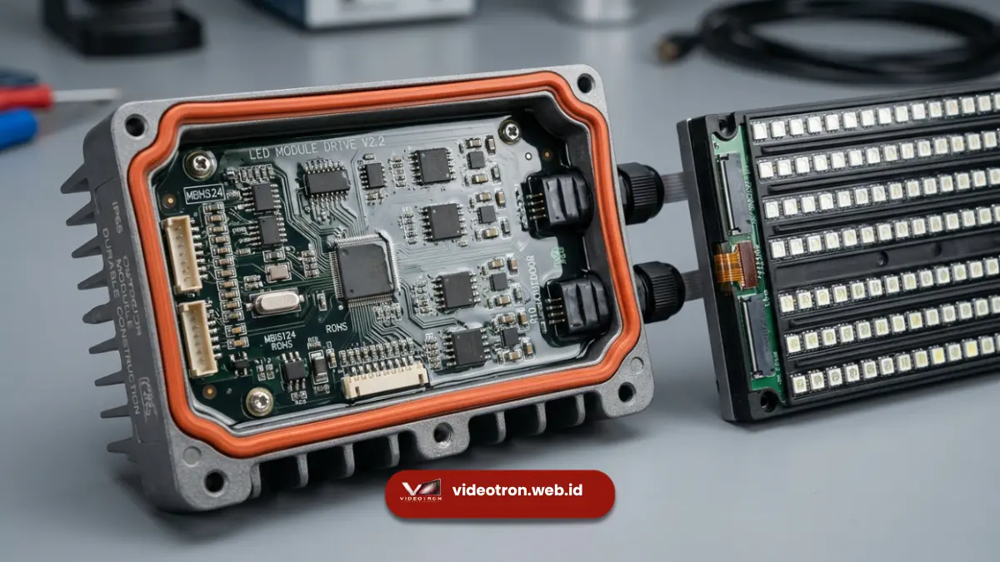

Panduan lengkap memahami standar proteksi cuaca IP65 untuk videotron outdoor agar tahan terhadap curah hujan tinggi, debu ekstrem, dan paparan panas matahari di Indonesia.
1. Apa Itu Kode Ingress Protection (IP Rating)?
Videotron yang dipasang di area luar ruangan (outdoor) seperti jalan raya, fasad gedung, stadion, maupun alun-alun kota harus berhadapan langsung dengan cuaca ekstrem yang berubah-ubah. Untuk menjamin keselamatan perangkat elektronik di dalamnya, industri global menggunakan standar baku bernama Ingress Protection (IP) Rating.
Sertifikasi IP dikeluarkan oleh International Electrotechnical Commission (IEC) untuk mengukur tingkat keandalan penyegelan (sealing) kabinet perangkat dari masuknya benda asing seperti debu, kotoran, dan cairan atau air hujan.
Proteksi Debu dan Benda Padat
Angka pertama menunjukkan tingkat ketahanan komponen internal videotron terhadap intrusi partikel kotoran, pasir, dan debu jalanan.
Proteksi Air dan Kelembapan
Angka kedua menunjukkan sejauh mana kabinet dan modul LED sanggup menahan cipratan air hujan deras maupun cuci semprot air.
2. Bedah Arti Angka "6" dan "5" pada Sertifikasi IP65
Pada kode sertifikasi IP65, masing-masing digit memiliki makna spesifik yang menentukan batas ketahanan teknis modul videotron Anda:
- Digit Pertama (Angka 6): Dust-Tight (Kedap Debu Total)
Merupakan tingkat tertinggi dalam perlindungan debu. Partikel mikro debu jalanan tidak akan bisa menembus sela-sela modul maupun sistem ventilasi kabinet. - Digit Kedua (Angka 5): Water Jet Protected (Tahan Semprotan Air)
Menunjukkan bahwa modul LED mampu bertahan dari semprotan air bertekanan dari segala arah nozzle tanpa mengganggu kerja aliran arus listrik di dalamnya.

Lapisan karet silikon waterproof (gasket) dan perlakuan khusus pada PCB modul LED outdoor berstandar IP65.3. Mengapa IP65 Sangat Krusial untuk Videotron di Indonesia?
Indonesia berada di wilayah iklim tropis dengan kelembapan udara rata-rata mencapai 80%, curah hujan deras saat musim hujan, dan sengatan UV intensif di siang hari.
Mencegah Korsleting Listrik
Lapisan silikon elastis dan kabel kedap air mencegah rembesan embun dan air hujan merusak power supply serta receiving card.
Proteksi Korosi dan Sinar UV
Bahan kabinet alumunium die-cast dengan cat anti-karat membuat layar tidak mudah pudar atau mengalami dekolorasi akibat terik matahari.
Ketahanan Terhadap Angin
Kabinet yang terkunci rapat mencegah hembusan angin membawa kotoran pasir masuk ke kompartemen mesin utama.
Menghemat Biaya Perawatan
Kerusakan akibat cuaca buruk terminimalisir, sehingga usia pakai (lifetime) videotron mampu bertahan hingga lebih dari 100.000 jam kerja.
4. Kesimpulan dan Tips Maintenance Videotron Luar Ruang
Memilih videotron outdoor wajib memastikan sertifikasi IP65 pada bagian depan maupun belakang modul. Pastikan instalatur melakukan pengecekan rutin pada jalur kabel, paking karet silikon, serta kipas pendingin secara berkala 6 bulan sekali.
Tim teknisi berpengalaman dari Vendor Videotron siap membantu Anda memilih spesifikasi modul LED outdoor terbaik yang teruji tahan iklim tropis Indonesia.